Questionário 1 do Estudo de Usabilidade - TutorBrasil
Introdução
Este primeiro questionário tem como objetivo entender os tipos de usuários do nosso objeto de estudo, avaliar a experiência do usuário, partindo da entrada do site até conseguir realizar seu objetivo final.
Metodologia
Separamos a estrutura do questionário em 3 objetivos macro:
- Entender o perfil desses usuários.
- Entender como é a interação do usuário com o fórum e suas respectivas experiências positivas ou negativas.
- Entender de que maneira os usuários veem de maneira geral as interfaces disponíveis do fórum.
A partir desses dados colhidos, podemos obter uma análise mais assertiva de onde deve caminhar nosso primeiro protótipo de média fidelidade, já considerando muitas informações do usuário.
Clique aqui para ir direto para o formulário
Resultados
O questionário foi aplicado entre os dias 28/08/2021 e 31/08/2021 e foi divulgado em grupos de Telegram e Whatsapp e também no próprio Fórum TutorBrasil.
O questionário obteve 49 respostas:
Seção 1 - Inicial
Questão 1
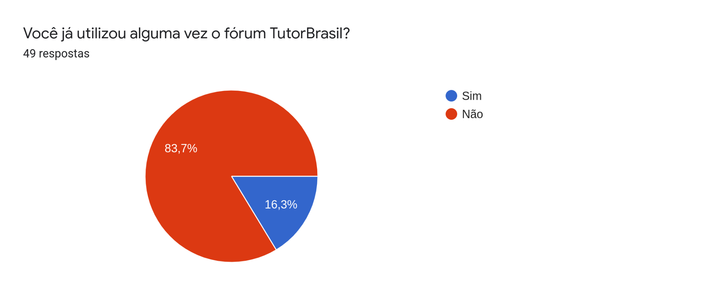
Questão 2

Questão 3
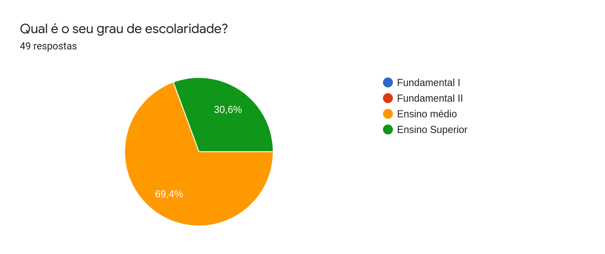
Questão 4
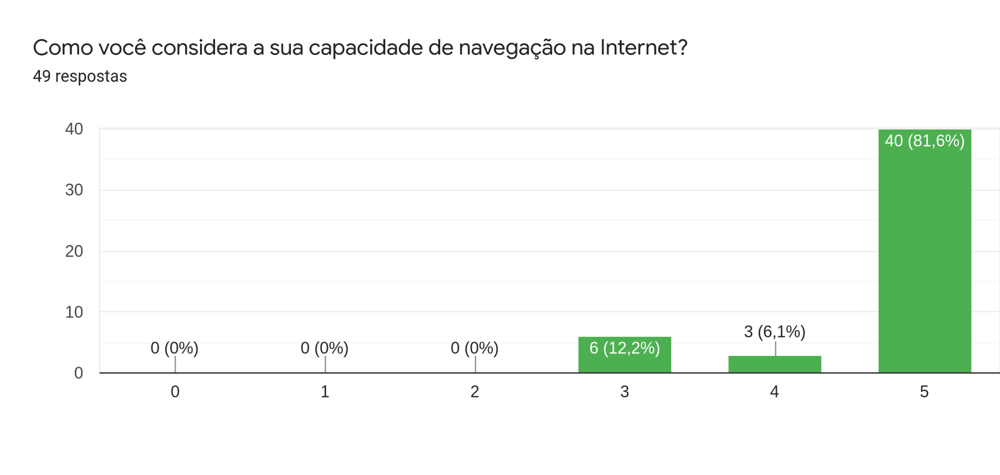
Seção 2 - Usabilidade do Fórum
Seção exclusiva para pessoas que já utilizaram o Fórum TutorBrasil.
Questão 5
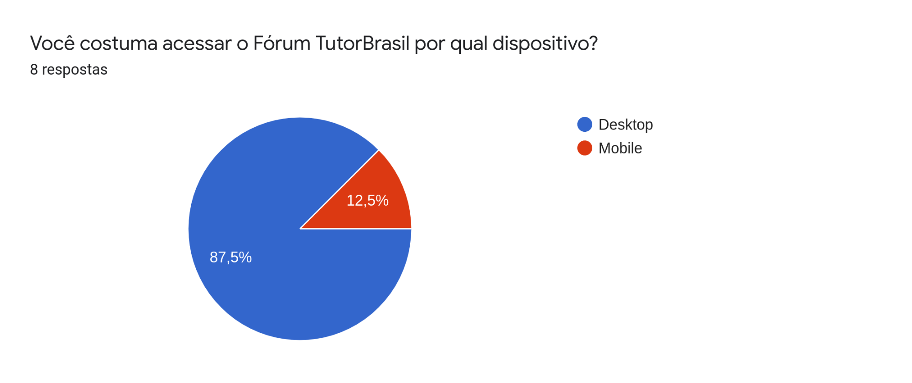
Questão 6
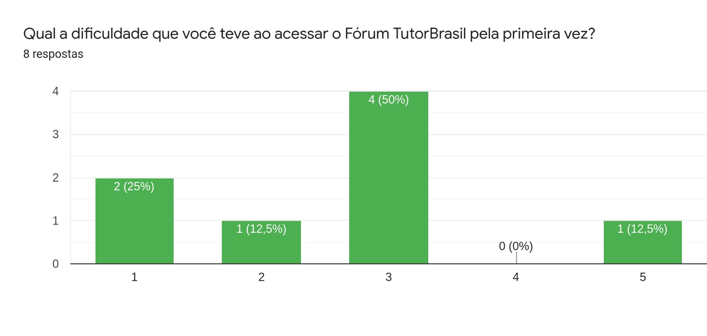
Questão 7
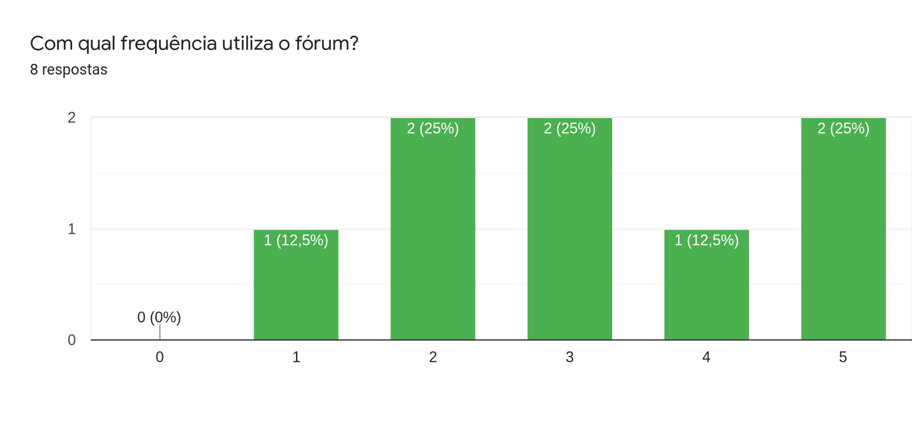
Questão 8
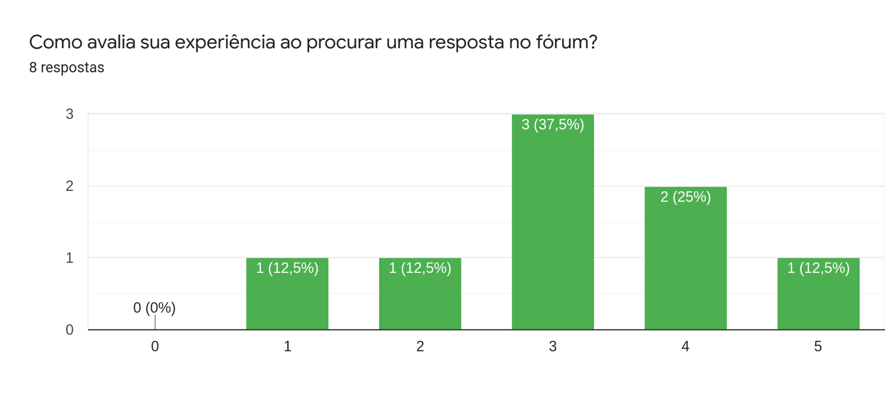
Questão 9
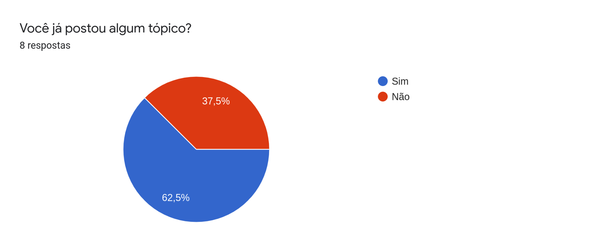
Questão 10
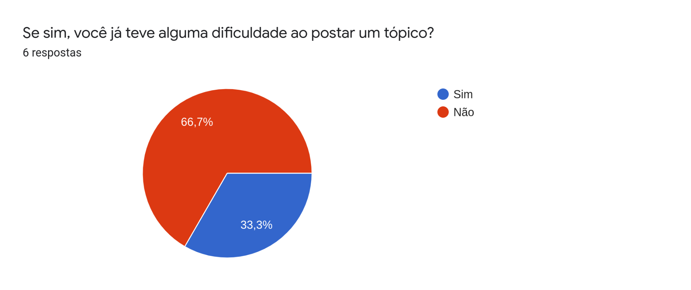
Questão 11
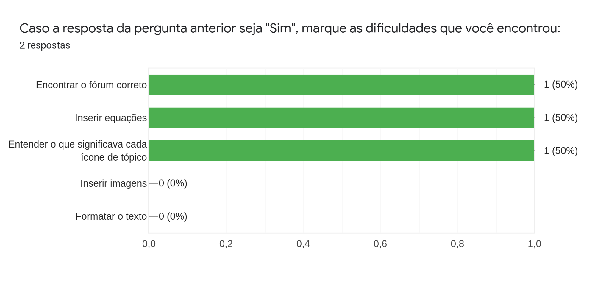
Questão 12
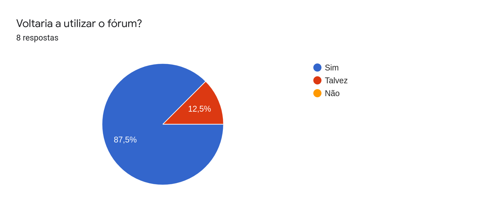
Questão 13
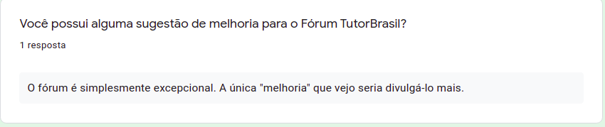
Seção 3 - Interface do Fórum
Questão 14
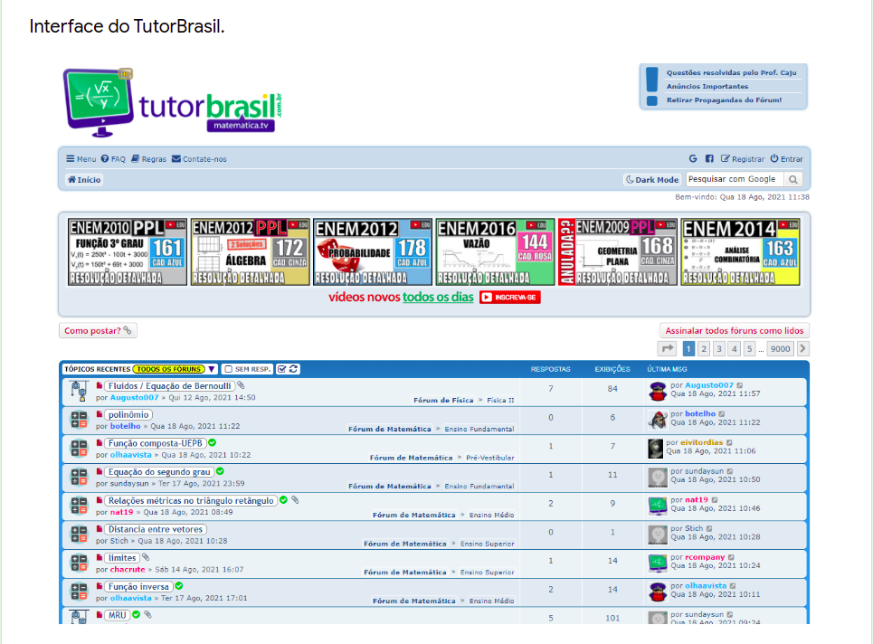
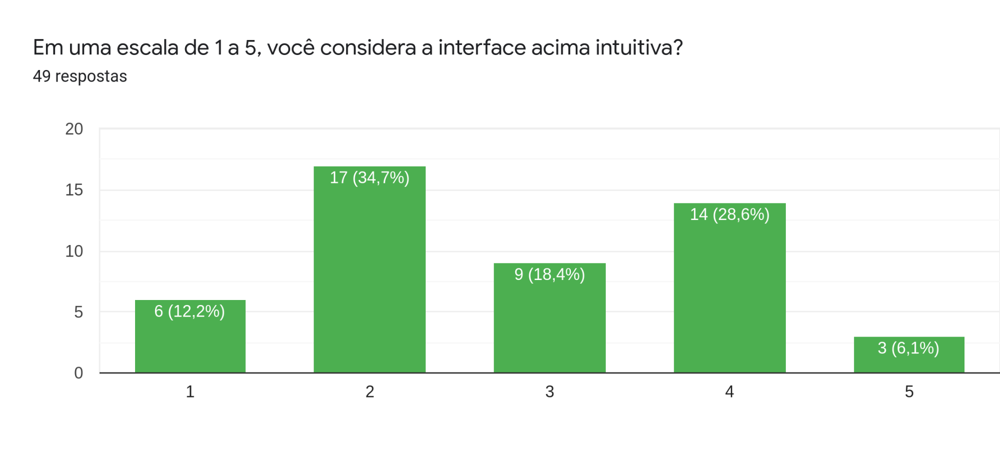
Questão 15
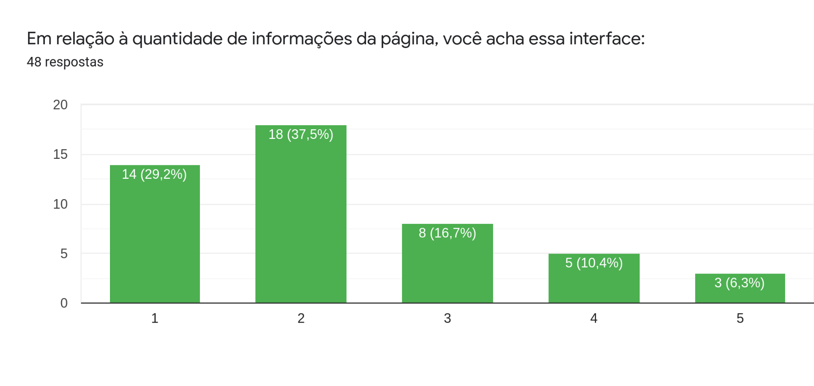
Questão 16
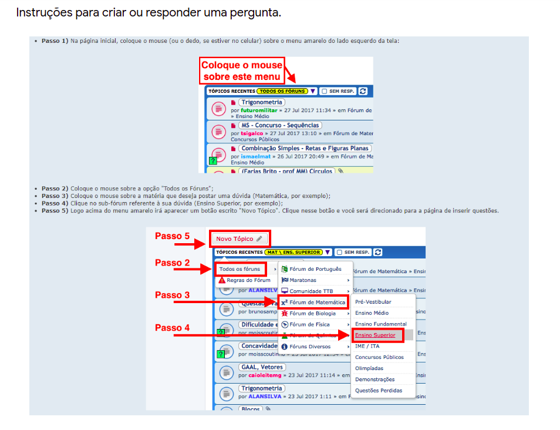
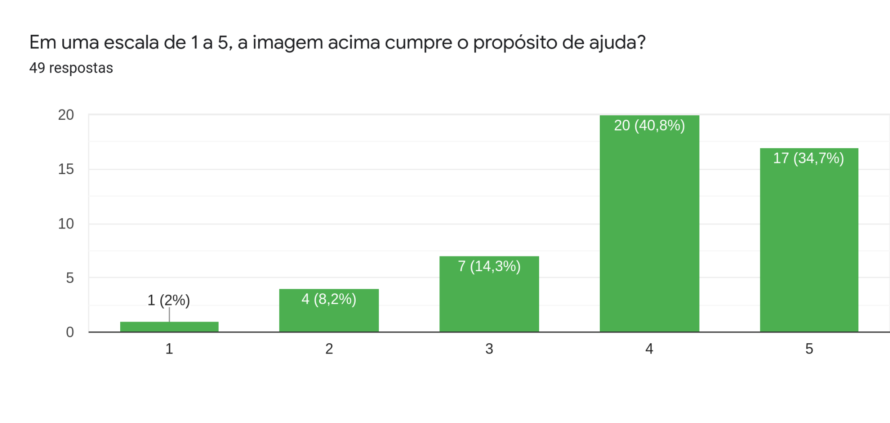
Questão 17
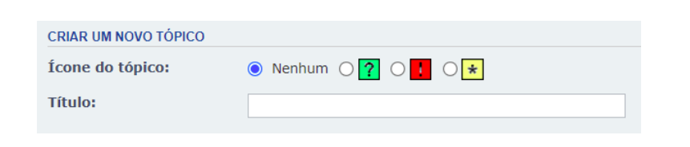
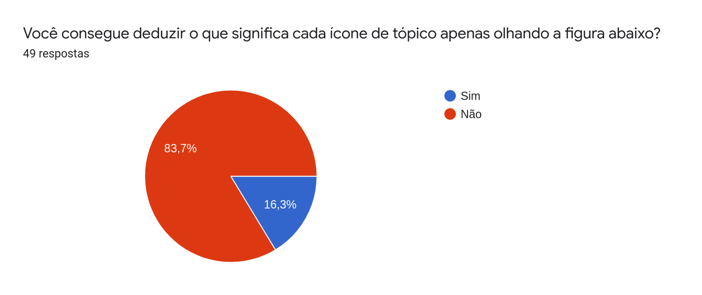
Conclusão
Analisando os resultados do questionário, foi possível chegar às seguintes conclusões:
- A maioria dos entrevistados nunca utilizou o Fórum TutorBrasil, possui entre 16 e 25 anos, possui o Ensino Médio ou o Ensino Superior completo e tem uma boa capacidade de navegação pela internet.
- Entre os entrevistados que já usaram o fórum, é possível observar que:
- A maioria acessa pelo desktop e teve alguma dificuldade ao acessar o fórum pela primeira vez.
- Dos que já postaram um tópico, apenas 1 terço encontrou algum problema durante o processo.
- A maioria voltaria a utilizar o fórum.
- A maioria considera que as instruções para criar tópicos cumprem o propósito, mas não conseguem entender o que significa cada ícone de tópico apenas olhando a imagem, já que o fórum não possui uma legenda para cada um desses ícones.
- A maioria dos entrevistados considera a interface poluída e pouco intuitiva.
Histórico de revisão
| Data | Autor | Modificações | Versão |
|---|---|---|---|
| 17/08/2021 | Luís Furtado | Criação do documento e adição da introdução e da metodologia | 1.0 |
| 01/09/2021 | Lucas Gomes | Adição dos resultados | 2.0 |
| 02/09/2021 | Lucas Gomes | Adição da conclusão | 3.0 |